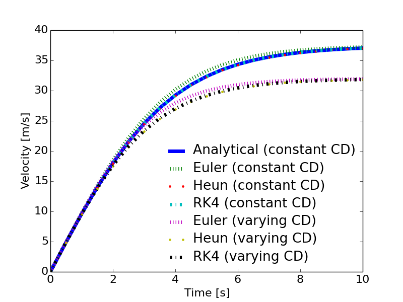

Let's implement the RK4 scheme and add it to the falling sphere example. The scheme has been implemented in the function rk4(), and is given below
def rk4(func, z0, time):
"""The Runge-Kutta 4 scheme for solution of systems of ODEs.
z0 is a vector for the initial conditions,
the right hand side of the system is represented by func which returns
a vector with the same size as z0 ."""
z = np.zeros((np.size(time),np.size(z0)))
z[0,:] = z0
zp = np.zeros_like(z0)
for i, t in enumerate(time[0:-1]):
dt = time[i+1] - time[i]
dt2 = dt/2.0
k1 = np.asarray(func(z[i,:], t)) # predictor step 1
k2 = np.asarray(func(z[i,:] + k1*dt2, t + dt2)) # predictor step 2
k3 = np.asarray(func(z[i,:] + k2*dt2, t + dt2)) # predictor step 3
k4 = np.asarray(func(z[i,:] + k3*dt, t + dt)) # predictor step 4
z[i+1,:] = z[i,:] + dt/6.0*(k1 + 2.0*k2 + 2.0*k3 + k4) # Corrector step
Figure 10 shows the results using Euler, Heun and RK4. AS seen, RK4 and Heun are more accurate than Euler. The complete program FallingSphereEulerHeunRK4.py is listed below. The functions euler, heun and rk4 are imported from the program ODEschemes.py.
Figure 10: Velocity of falling sphere using Euler, Heun and RK4.

# chapter1/programs_and_modules/FallingSphereEulerHeunRK4.py;ODEschemes.py @ git@lrhgit/tkt4140/allfiles/digital_compendium/chapter1/programs_and_modules/ODEschemes.py;
from DragCoefficientGeneric import cd_sphere
from ODEschemes import euler, heun, rk4
from matplotlib.pyplot import *
import numpy as np
# change some default values to make plots more readable
LNWDT=5; FNT=11
rcParams['lines.linewidth'] = LNWDT; rcParams['font.size'] = FNT
g = 9.81 # Gravity m/s^2
d = 41.0e-3 # Diameter of the sphere
rho_f = 1.22 # Density of fluid [kg/m^3]
rho_s = 1275 # Density of sphere [kg/m^3]
nu = 1.5e-5 # Kinematical viscosity [m^2/s]
CD = 0.4 # Constant drag coefficient
def f(z, t):
"""2x2 system for sphere with constant drag."""
zout = np.zeros_like(z)
alpha = 3.0*rho_f/(4.0*rho_s*d)*CD
zout[:] = [z[1], g - alpha*z[1]**2]
return zout
def f2(z, t):
"""2x2 system for sphere with Re-dependent drag."""
zout = np.zeros_like(z)
v = abs(z[1])
Re = v*d/nu
CD = cd_sphere(Re)
alpha = 3.0*rho_f/(4.0*rho_s*d)*CD
zout[:] = [z[1], g - alpha*z[1]**2]
return zout
# main program starts here
T = 10 # end of simulation
N = 20 # no of time steps
time = np.linspace(0, T, N+1)
z0=np.zeros(2)
z0[0] = 2.0
ze = euler(f, z0, time) # compute response with constant CD using Euler's method
ze2 = euler(f2, z0, time) # compute response with varying CD using Euler's method
zh = heun(f, z0, time) # compute response with constant CD using Heun's method
zh2 = heun(f2, z0, time) # compute response with varying CD using Heun's method
zrk4 = rk4(f, z0, time) # compute response with constant CD using RK4
zrk4_2 = rk4(f2, z0, time) # compute response with varying CD using RK4
k1 = np.sqrt(g*4*rho_s*d/(3*rho_f*CD))
k2 = np.sqrt(3*rho_f*g*CD/(4*rho_s*d))
v_a = k1*np.tanh(k2*time) # compute response with constant CD using analytical solution
# plotting
legends=[]
line_type=['-',':','.','-.',':','.','-.']
plot(time, v_a, line_type[0])
legends.append('Analytical (constant CD)')
plot(time, ze[:,1], line_type[1])
legends.append('Euler (constant CD)')
plot(time, zh[:,1], line_type[2])
legends.append('Heun (constant CD)')
plot(time, zrk4[:,1], line_type[3])
legends.append('RK4 (constant CD)')
plot(time, ze2[:,1], line_type[4])
legends.append('Euler (varying CD)')
plot(time, zh2[:,1], line_type[5])
legends.append('Heun (varying CD)')
plot(time, zrk4_2[:,1], line_type[6])
legends.append('RK4 (varying CD)')
legend(legends, loc='best', frameon=False)
font = {'size' : 16}
rc('font', **font)
xlabel('Time [s]')
ylabel('Velocity [m/s]')
savefig('example_sphere_falling_euler_heun_rk4.png', transparent=True)
show()